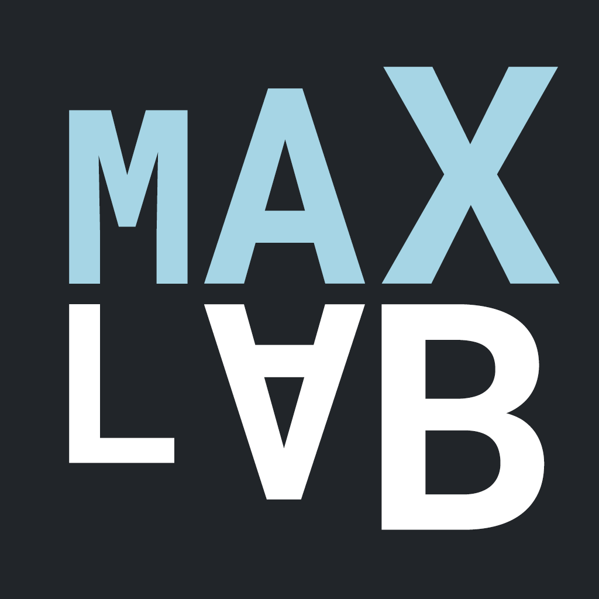

Maximilian Golla
Tenure-Track Faculty at CISPA Helmholtz Center for Information Security in Saarbrücken, Germany
Hello there!
I am a researcher interested in usable security and privacy. I graduated in computer science and specialized in information security and developed an interest in usability and human factors in computer security.
Since October 2023, I am a tenure-track faculty at CISPA and the lead for the MaxLab.
I received my Ph.D. from  Ruhr University Bochum, where I focused on exploring the usability and security of password-based user authentication.
Later, I did a postdoc at the
Ruhr University Bochum, where I focused on exploring the usability and security of password-based user authentication.
Later, I did a postdoc at the  Max Planck Institute for Security and Privacy in Bochum, Germany.
Max Planck Institute for Security and Privacy in Bochum, Germany.
My research focuses on computer security, privacy, and human-computer interaction (HCI). In particular, I am working on reinforcing the security of passwords by driving the adoption of two-factor, risk-based, and passwordless authentication. In the area of usable privacy, I am exploring users' perceptions of online behavioral advertising, data collection, and tracking, and I am analyzing the privacy risks of disruptive technologies.

Contact
CISPA Helmholtz Center for Information Security
Building D1, Room 2.12
Kaiserstr. 21, 66386 St. Ingbert
golla@cispa.de ( PGP Key)